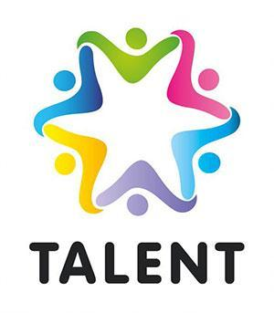

Relevance of Talent Based Learning (away from Academic Learning for Africa)
Envisage an Africa with a novel and proficient education system; a system that promotes innovation and eschews rhetoric theories.
A system that is well designed and calculated to avert the continent from the backlash of brain drain and lack of specialization; one that is devoid of rigid
policies that devour upon the fabric of the gifted and talented in our continent.
It is indeed regrettable that the familiar adage “everyone is able but most people never open the package” is a profound reflection in our society today.
From past reports on education, if the current education system in the country is not overhauled at the soonest convenience, then the educational sector will
face a major crisis. The significance of the modern educational techniques can hence not be underestimated as they may help to solve most of the problems facing
the sector.
The TBL Model as an International Alternative Education
Two models have relevance for TBL: the Waldorf education model pioneered by Rudolph Steiner, an Austrian philosopher in 1919, and the
University of Miami football recruiting model created by Howard Schnellenberger in 1979.
Waldorf education is the largest independent alternative education movement in the world. It is a humanistic approach which stresses the
role of imagination in the learning process and the value of integrating academic, artistic and practical activities. The goal is to develop
people with free, morally responsible and integrated personalities who are socially competent. The student’s capacity for imagination and their
inherent talents is the subject of the educational process. The educational assessment process is primarily qualitative, not quantitative.
When Howard Schnellenberger took over as Head Coach at the University of Miami he announced his intention to win a national championship within
five years, and he initiated a recruiting strategy aimed at finding and retaining the best local talent. He spoke of mining the “State of Miami.”
There was an abundance of talent in Miami’s inner city pockets.
He sought authority from the university council to admit some students without going through the usual grades-admission process but based on
real talents he had identified. He further asked the university to relieve the students on his programme from courses and examinations that he
determined had zero direct bearing on the talent based programmes for the football talent pool. The university finally agreed after a long haggling
and with stiff conditions.
Three years later the “U” football program and the other majors in the state (FSU and University of Florida) have been legendary. No one remembered what
grades or what marks the students had got from high school nor were people concerned about semester examinations for these youngsters. Everyone just enjoyed
the fame and success they brought to the name of the university and the State of Miami and Florida.
The essential point is that Steiner and Schnellenberger had the foresight and vision to understand that imagination and talent were supreme drivers of skill set development and achievement.
These two educators approached students in a unique manner. And they awakened and harnessed passion enabling talent to thrive.
GATES Education provides Talent Based Learning and NOT Academic Learning! Our model is grass roots and expansive. We are on the brink of disaster in terms of a lack of educational success with
a huge segment of our people. It’s time to break down rigid structures that sustain failure and promote methods which do not meet huge numbers of students potentials and where they are truly at;
just struggling to survive, often in multi-challenging circumstances at home, in school, and in the ‘hood’. Each and every student represents a microcosm of our culture’s success or failure going forward.
Key features of Talent Based Learning
Registration or admission based on Professional Gift and Talent Reports and/or Accreditation of Prior Experiential Learning and Mature Talent Ciphers.
Age DOES NOT count at registration / admission or learning process; just the talent in action. So it is possible for a-12 year old to reach the equivalent of a bachelors degree based on learning outcomes and produced merchandises, designs, models, patents, etc.

Biased to creating something new or improving what is existing in real world
Gifts emerge as multiple genres of talent evolve in action and through deciphered energies of passion in latitudinal and longitudinal dimensions
Academic Skills and Knowledge (usually associated with qualifications) are just support programmes and may be introduced as mere Academic Clinic Quotients MUCH AS they will influence and contribute to the final outcome
The whole person developed through Soft Skills programmes and Emotional Quotients Balance
Assessments based on Problem-Project Based OR Non-Verbal Kits and not usual academic examinations taken at end of terms or semesters for the sake of gaining qualifications
Awards based on produced merchandises, designs, models, patents, etc
Awards include Certificates of Achievement, Diplomas, Bachelors/Masters/Doctoral Degrees based on Talent Outcomes as above, and not mere academic rubrics. Such may include Transfer of Talent hence Skills and Knowledge Credits BUT not traditional transfer of credits by comparing course units!
Fellowship and Hall of Fame Awards based on age, Talent Genre & Multiplicity, nature of TBL outcomes, and environment